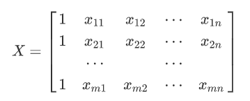

<!DOCTYPE HTML>
<html lang="zh-CN">
<head><meta name="generator" content="Hexo 3.9.0">
    <!--Setting-->
    <meta charset="UTF-8">
    <meta name="viewport" content="width=device-width, user-scalable=no, initial-scale=1.0, maximum-scale=1.0, minimum-scale=1.0">
    <meta http-equiv="X-UA-Compatible" content="IE=Edge,chrome=1">
    <meta http-equiv="Cache-Control" content="no-siteapp">
    <meta http-equiv="Cache-Control" content="no-transform">
    <meta name="renderer" content="webkit|ie-comp|ie-stand">
    <meta name="apple-mobile-web-app-capable" content="ZhangShaojie&#39;s Blog">
    <meta name="apple-mobile-web-app-status-bar-style" content="black">
    <meta name="format-detection" content="telephone=no,email=no,adress=no">
    <meta name="browsermode" content="application">
    <meta name="screen-orientation" content="portrait">
    <meta name="theme-version" content="1.2.3">
    <meta name="root" content="/">
    <link rel="dns-prefetch" href="http://yoursite.com">
    <!--SEO-->

    <meta name="keywords" content>


    <meta name="description" content="线性回归​    在金融等领域，线性回归模型经常被用以解释多个自变量和一个因变量之间的关系$$y_i = \beta_0+\beta_1x_{i1}+\beta_2x_{i2}+\beta_3x...">


<meta name="robots" content="all">
<meta name="google" content="all">
<meta name="googlebot" content="all">
<meta name="verify" content="all">

    <!--Title-->


<title>OLS与GMM | ZhangShaojie&#39;s Blog</title>


    <link rel="alternate" href="/atom.xml" title="ZhangShaojie&#39;s Blog" type="application/atom+xml">


    <link rel="icon" href="/favicon.ico">

    


<link rel="stylesheet" href="/css/bootstrap.min.css?rev=3.3.7">
<link rel="stylesheet" href="/css/font-awesome.min.css?rev=4.5.0">
<link rel="stylesheet" href="/css/style.css?rev=@@hash">


    
	<div class="hide">
		<script type="text/javascript">
			var cnzz_protocol = (("https:" == document.location.protocol) ? " https://" : " http://");document.write(unescape("%3Cspan class='cnzz_stat_icon_1263868967 hide' %3E%3Cscript%20src%3D%22https%3A%2F%2Fs95.cnzz.com%2Fz_stat.php%3Fweb_id%3D1272564536%22%3E%3C%2Fscript%3E%3C/span%3E%3Cscript src='" + cnzz_protocol + "s19.cnzz.com/z_stat.php%3Fid%3D1263868967%26show%3Dpic1' type='text/javascript'%3E%3C/script%3E"));
		</script>
	</div>


    


	<script type="text/x-mathjax-config"> 
   		MathJax.Hub.Config({ TeX: { equationNumbers: { autoNumber: "all" } } }); 
   	</script>
    <script type="text/x-mathjax-config">
    	MathJax.Hub.Config({tex2jax: {
             inlineMath: [ ['$','$'], ["\\(","\\)"] ],
             processEscapes: true
           }
         });
    </script>
    
    <script src="https://cdn.mathjax.org/mathjax/latest/MathJax.js?config=TeX-AMS-MML_HTMLorMML" type="text/javascript">
    </script>
</head>

</html>
<!--[if lte IE 8]>
<style>
    html{ font-size: 1em }
</style>
<![endif]-->
<!--[if lte IE 9]>
<div style="ie">你使用的浏览器版本过低，为了你更好的阅读体验，请更新浏览器的版本或者使用其他现代浏览器，比如Chrome、Firefox、Safari等。</div>
<![endif]-->

<body>
    <header class="main-header"  style="background-image:url(http://snippet.shenliyang.com/img/banner.jpg)"  >
    <div class="main-header-box">
        <a class="header-avatar" href="/" title='Jupiter'>
            
        </a>
        <div class="branding">
        	<!--<h2 class="text-hide">Snippet主题,从未如此简单有趣</h2>-->
            
                <h2> 张少杰的博客 </h2>
            
    	</div>
    </div>
</header>
    <nav class="main-navigation">
    <div class="container">
        <div class="row">
            <div class="col-sm-12">
                <div class="navbar-header"><span class="nav-toggle-button collapsed pull-right" data-toggle="collapse" data-target="#main-menu" id="mnav">
                    <span class="sr-only"></span>
                        <i class="fa fa-bars"></i>
                    </span>
                    <a class="navbar-brand" href="http://yoursite.com">ZhangShaojie&#39;s Blog</a>
                </div>
                <div class="collapse navbar-collapse" id="main-menu">
                    <ul class="menu">
                        
                            <li role="presentation" class="text-center">
                                <a href="/"><i class="fa "></i>首页</a>
                            </li>
                        
                            <li role="presentation" class="text-center">
                                <a href="/categories/数学与统计/"><i class="fa "></i>数学与统计</a>
                            </li>
                        
                            <li role="presentation" class="text-center">
                                <a href="/categories/技术与工具/"><i class="fa "></i>技术与工具</a>
                            </li>
                        
                            <li role="presentation" class="text-center">
                                <a href="/categories/杂谈与爱好/"><i class="fa "></i>杂谈与爱好</a>
                            </li>
                        
                            <li role="presentation" class="text-center">
                                <a href="/categories/读书笔记/"><i class="fa "></i>读书笔记</a>
                            </li>
                        
                            <li role="presentation" class="text-center">
                                <a href="/archives/"><i class="fa "></i>时间轴</a>
                            </li>
                        
                    </ul>
                </div>
            </div>
        </div>
    </div>
</nav>
    <section class="content-wrap">
        <div class="container">
            <div class="row">
                <main class="col-md-8 main-content m-post">
                    <p id="process"></p>
<article class="post">
    <div class="post-head">
        <h1 id="OLS与GMM">
            
	            OLS与GMM
            
        </h1>
        <div class="post-meta">
    
        <span class="categories-meta fa-wrap">
            <i class="fa fa-folder-open-o"></i>
            <a class="category-link" href="/categories/数学与统计/">数学与统计</a>
        </span>
    

    
        <span class="fa-wrap">
            <i class="fa fa-tags"></i>
            <span class="tags-meta">
                
            </span>
        </span>
    

    
        
        <span class="fa-wrap">
            <i class="fa fa-clock-o"></i>
            <span class="date-meta">2019/07/30</span>
        </span>
        
    
</div>
            
            
    </div>
    
    <div class="post-body post-content">
        <h3 id="线性回归"><a href="#线性回归" class="headerlink" title="线性回归"></a>线性回归</h3><p>​    在金融等领域，线性回归模型经常被用以解释多个自变量和一个因变量之间的关系<br>$$<br>y_i = \beta_0+\beta_1x_{i1}+\beta_2x_{i2}+\beta_3x_{i3}+\cdots +\beta_n x_{in} + \varepsilon_i,\qquad i=1,2,\cdots,m<br>$$<br>​    该模型的假定显然有诸多的问题，但足够简洁使得我们可以计算，也不容易出现过拟合现象（$n\ll m$，否则需要使用LASSO等方法对数据进行降维处理）. </p>
<p>​    进一步，我们假定$\varepsilon_i $服从分布$N(0,\sigma_i^2)$. 对自变量矩阵增广处理：</p>
<p></p>
<p>从而得矩阵形式<br>$$<br>Y = X\beta+\varepsilon<br>$$</p>
<h3 id="最小二乘法"><a href="#最小二乘法" class="headerlink" title="最小二乘法"></a>最小二乘法</h3><p>​    最小二乘法(OLS, ordinary least squares)的目标为求解下面的最优化问题<br>$$<br>\hat \beta = \operatorname{argmin}_{\theta \in \mathbb R^{n+1}}  E | Y-X\beta |_2^2<br>$$<br>由于$\dfrac{\partial }{\partial \beta}E|Y-X\beta|_2^2  =-2 E X^T(Y-X\beta) = 0$，即有$X^TX \beta = X^TY$，若$X^TX$非退化（一般都能成立，$n\ll m$时），从而$\beta = (X^TX)^{-1} X^TY$.</p>
<h3 id="广义矩估计"><a href="#广义矩估计" class="headerlink" title="广义矩估计"></a>广义矩估计</h3><p>​    广义矩估计(GMM, generalized method of moments)相较于OLS、GLS等估计方法更为宽泛. 注意到OLS的本质为<br>$$<br>E X^T(Y-X^T\beta)=0.<br>$$<br>一阶矩估计(MM, moment method)的结果就是OLS，而考虑一般的矩的方法就是GMM:<br>$$<br>Ef(Y-X^T\beta) = 0.<br>$$<br>可以取矩条件$f(Y-X^T\beta) = X^T(Y-X^T\beta) ^{3}$，此处幂次运算为矩阵每个元素的幂次运算. </p>
<p>​    现在考虑基础的线性估计方法<br>$$<br>E[Y-X^T\beta | Z] =0 \ \ \Longrightarrow \  \ EZ^T(Y-X^T\beta) =0.<br>$$<br>此时考虑的最优化函数为<br>$$<br>Q(\beta) = \left[\frac1n Z^T(Y-X^T\beta)\right]^T W_n \left[\frac1n Z^T(Y-X^T\beta)\right]<br>$$<br>$W_n$为权值函数. 广义矩估计下的最优权函数$W_n$为${\frac1n[Z^T(Y-X^T\beta)]^T[Z^T(Y-X^T\beta)]}^{-1}$. 不过一般来说，取$W_n=I_n$也足够了. 最优的$\beta$值有显式表达式<br>$$<br>\widehat{\beta}<em>{\mathrm{GMM}} = \left[X ^T ZW</em>{N}Z^TX\right]^{-1}X ^TZW_{N}Z^TY.<br>$$<br>​    再进一步假定残差项$\varepsilon_i$同方差，则根据极大似然估计(MLE, maximum likelihood estimation)，有$\sigma$的估计<br>$$<br>\hat\sigma^2  = \overline {\varepsilon^2} - {\overline \varepsilon}^2.<br>$$<br>GMM很重要的一步是如何选取合适的矩条件，这需要对问题变量的实际意义分析才能恰当的得到.</p>
<h3 id="参考"><a href="#参考" class="headerlink" title="参考"></a>参考</h3><ol>
<li>《Microeconomics Methods And Applications》, Chapter6, <a href="http://www.centroportici.unina.it/centro/Cameron&Trivedi.pdf" target="_blank" rel="noopener">Link</a>.</li>
<li>知乎相关回答 <a href="https://www.zhihu.com/question/41312883/answer/91484566" target="_blank" rel="noopener">Link</a>.</li>
<li>GMM收敛性的证明论文 <a href="http://lib.cufe.edu.cn/upload_files/other/3_20140520102219_Large%20Sample%20Properties%20of%20Generalized%20Method%20of%20Moments%20Estimators.pdf" target="_blank" rel="noopener">Link</a>.</li>
</ol>

    </div>
    
    <div class="post-footer">
        <div>
            
                转载声明：商业转载请联系作者获得授权,非商业转载请注明出处 © <a href="https://jupiter-19.github.io/" target="_blank">Jupiter's Blog</a>
            
        </div>
        <div>
            
        </div>
    </div>
</article>

<div class="article-nav prev-next-wrap clearfix">
    
    
        <a href="/2019/07/25/基础数学课程知识大纲/" class="next-post btn btn-default" title='基础数学课程知识大纲'>
            <span class="hidden-lg">下一篇</span>
            <span class="hidden-xs">基础数学课程知识大纲</span><i class="fa fa-angle-right fa-fw"></i>
        </a>
    
</div>


    <div id="comments">
        
	<link rel="stylesheet" href="https://cdn.bootcss.com/gitalk/1.4.1/gitalk.min.css">
<script src="//cdn.bootcss.com/gitalk/1.4.1/gitalk.min.js"></script>
<script src="//cdn.bootcss.com/blueimp-md5/2.9.0/js/md5.min.js"></script>

<div id="gitalk-container"></div>
<script type="text/javascript">
    var gitalk = new Gitalk({
        // Gitalk配置
        language: "zh-CN",
        clientID: "79ce199a43614be97674",
        clientSecret: "c68e11a8bb3ced0b9c95cb40f9a9335ba5322189",
        repo: "blogSourse",
        owner: "Jupiter-19",
        admin: ["Jupitet-19"],
        id: md5(location.pathname),
        distractionFreeMode: true
    });
    gitalk.render('gitalk-container');
</script>


    </div>


                </main>
                
                    <aside id="article-toc" role="navigation" class="col-md-4">
    <div class="widget">
        <h3 class="title">文章目录</h3>
        
            <ol class="toc"><li class="toc-item toc-level-3"><a class="toc-link" href="#线性回归"><span class="toc-text">线性回归</span></a></li><li class="toc-item toc-level-3"><a class="toc-link" href="#最小二乘法"><span class="toc-text">最小二乘法</span></a></li><li class="toc-item toc-level-3"><a class="toc-link" href="#广义矩估计"><span class="toc-text">广义矩估计</span></a></li><li class="toc-item toc-level-3"><a class="toc-link" href="#参考"><span class="toc-text">参考</span></a></li></ol>
        
    </div>
</aside>

                
            </div>
        </div>
    </section>
    <footer class="main-footer">
    <div class="container">
        <div class="row">
        </div>
    </div>
</footer>

<a id="back-to-top" class="icon-btn hide">
	<i class="fa fa-chevron-up"></i>
</a>


    <div class="copyright">
    <div class="container">
        <div class="row">
            <div class="col-sm-12">
                <div class="busuanzi">
    
</div>

            </div>
            <div class="col-sm-12">
                <span>Copyright &copy; 2019
                </span> |
                <span>
                    Powered by <a href="//hexo.io" class="copyright-links" target="_blank" rel="nofollow">Hexo</a>
                </span> |
                <span>
                    Theme by <a href="//github.com/shenliyang/hexo-theme-snippet.git" class="copyright-links" target="_blank" rel="nofollow">Snippet</a>
                </span>
            </div>
        </div>
    </div>
</div>


<script src="/js/app.js?rev=@@hash"></script>

</body>
</html>